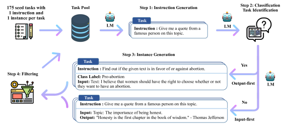

教师模型强模型
- 训练学生模型飞轮 变强后 成为新教师
真实语料终归是有限的——互联网上的高质量文本迟早要被「吃完」。合成数据是对这条路终点的回答：用模型生成数据来训练模型。它既是能力放大器（让小模型继承大模型的能力），也是一把双刃剑——用不好就是模型坍缩的催化剂。
合成数据的核心循环：用强模型生成候选 → 质量过滤 → 去污染 → 训练目标模型 → 目标模型变强后成为新的生成器。这就是「数据飞轮」。如果飞轮转得好，模型一代比一代强；如果转不好——过滤不严、去重不彻底——就会发生模型坍缩，一代比一代差。
真实语料的瓶颈已经逼近：有研究对公开网络中的高质量文本存量做过估算，量级在 10T 到 20T tokens 之间，而前沿模型的训练数据量已经达到 15T 以上。除了「数据用完」的物理限制，还有几个场景只能用合成数据：
在展开具体方法之前，先抓住这条主线。所有合成数据方法的差异，其实都可以归结为一个问题：你凭什么判断这条生成的数据是好是坏？ 生成本身很便宜，判断才是稀缺资源。判断信号越硬，合成数据的价值越高，坍缩的风险越低。
| 过滤信号 | 怎么判断 | 信号硬度 | 成本 | 适用场景 |
|---|---|---|---|---|
| 规则可验证 | 数学答案是否等于标准答案、格式是否合法 | 最硬，几乎无噪声 | 极低 | 数学、结构化输出 |
| 执行器反馈 | 代码能否编译、单元测试是否通过、工具调用是否成功 | 硬，但只覆盖被测到的行为 | 低（需沙箱） | 代码、Agent 轨迹 |
| 奖励模型打分 | 训一个 RM 给回复打分，取高分 | 中，可能被 reward hacking | 中（要先训 RM） | 开放域对话、写作 |
| 更强模型评判 | 让更强的模型当裁判做成对比较 | 中，带裁判自身的偏好偏差 | 中到高（推理开销） | 难以规则化的主观质量 |
| 启发式与去重 | 长度、格式、相似度、拒答检测 | 软，只能筛掉明显垃圾 | 极低 | 所有场景的第一道关卡 |
| 人工标注 | 人来读、人来判 | 最贴近真实目标，但有标注噪声 | 最高 | 校准其他信号、做小规模金标准 |
这张表能解释很多现象。为什么数学和代码是合成数据最先跑通的两个领域？因为它们有免费且几乎无噪声的验证信号——答案对不对、测试过不过，不需要人也不需要模型来判断。而为什么开放域写作的合成数据一直不温不火？因为你没有可靠的裁判，只能用奖励模型，而奖励模型本身就是从有限人类偏好数据里学来的近似。
Self-Instruct（Wang et al., 2022）是合成指令数据的奠基方法，核心思路极其简洁：用少量人工种子指令（如 175 条）让语言模型自动生成更多指令-回复对。
先看论文原图。它把 Self-Instruct 的循环画得比任何文字都清楚：模型如何从一个很小的种子任务池出发，一步步长出几千条可用的指令数据。

新手读这张图，按四个方块走：① 最上面是任务池（Task Pool）——一开始只有 175 条人工种子指令，它是整个循环的「发源地」。② 左边是「采样 + 提示」——从任务池里随机抽若干条指令，拼成一段提示语（prompt），交给语言模型。③ 中间是「生成」——模型根据提示产出新的指令，以及对应的输入-输出实例（instance）。④ 最下面是「过滤 + 回收」——新生成的指令要经过两关：一关是检查是否与已有指令重复（用 ROUGE 相似度），另一关是检查指令是否「真的能回答」（是不是格式合法的任务）；通过过滤的指令加回任务池，于是任务池从 175 条变成几百条、几千条……循环往复。
把这张图和上面那幅自制 Mermaid 对照着看会发现：Mermaid 画的是「流程骨架」，论文原图画的是「数据流动」——尤其画出了「过滤掉的不要」「过滤不过的丢弃」这些细节，以及「加回任务池」这个递归的关键动作。理解了「生成 → 过滤 → 回收」这个闭环，就理解了后面几乎所有合成数据方法（Evol-Instruct、RFT）都是在这条主线上做变体。
Self-Instruct 的关键不在「生成」本身——大模型天然就能生成文本——而在于质量控制：
Alpaca、Vicuna 等早期开源模型的指令数据都用 Self-Instruct 的变体生成。它的价值在于证明了用极少量人工种子就能启动一个可扩展的合成数据管线。
Self-Instruct 生成的指令往往偏简单、同质化。Evol-Instruct（WizardLM 提出）的改进是让指令进化：对每个指令做深度或广度的演化。
给指令增加约束、增加推理步骤、提高难度。如「写一首诗」→「写一首关于秋天的七言律诗，第二句必须包含『落叶』，且押韵」。
改变指令的领域或主题，增加多样性。如「写一首诗」→「写一段 Python 代码实现快速排序」。
Evol-Instruct 的思路本质上是数据课程在合成数据上的应用——通过控制进化方向，让生成的指令覆盖更广的难度和领域空间。但要注意两个失败模式：进化过程可能产生无效指令（约束互相矛盾、条件无法满足），以及难度虚高（指令看起来很复杂，其实只是堆了一串无关的限定词，并没有增加真正的推理负担）。过滤步骤不能省，而且要能区分这两种情况。
拒绝采样微调（Rejection Sampling Fine-Tuning, RFT）是另一种核心方法，广泛用于强化学习阶段的初始策略改进。思路：让模型对同一问题生成多个回复，只保留最好的那些来训练。
写成代码骨架，核心只有二十行左右：
def rejection_sampling_round(model, problems, verifier, n=8,
max_keep=2, sim_threshold=0.9):
"""对每个问题采样 n 个回复，保留通过验证且互不重复的前 max_keep 条"""
sft_pairs, too_hard = [], []
for x in problems:
cands = model.generate(x, n=n, temperature=0.8)
passed = [y for y in cands if verifier(x, y)]
if not passed:
too_hard.append(x) # 全错：单独攒起来，别丢
continue
# 同题去重：解法雷同的只留一条，避免训练集被简单题淹没
kept = []
for y in sorted(passed, key=len): # 偏好更简洁的解
if all(similarity(y, k) < sim_threshold for k in kept):
kept.append(y)
if len(kept) >= max_keep:
break
sft_pairs.extend((x, y) for y in kept)
return sft_pairs, too_hardDeepSeek-R1 的训练管线中就用了这一步：先在 GRPO 之前用拒绝采样收集高质量推理链做 SFT，让模型有较好的初始推理能力，再用 RL 进一步优化。这比直接从基座模型开始 RL 更稳定——RL 需要一个「差不多」的初始策略才能有效探索。
用教师模型（大而强）生成回复，训练学生模型（小而快），这是知识蒸馏在数据层面的体现。与传统的 logits 蒸馏不同，这里蒸馏的是生成的文本本身——学生模型看到的是教师的高质量输出。
关键细节在于采样策略：
合成数据最大的风险之一是同质化——同一个模型生成的数据天然带着模型的「口味」和偏见。Persona 驱动的方法通过给模型设定不同「人格」来增加多样性：
# Persona 驱动生成示例
personas = [
"你是一位有 20 年经验的资深数据库工程师，擅长性能调优",
"你是一位刚入门的编程学习者，回答时注重基础概念解释",
"你是一位技术写作专家，善于用类比解释复杂概念",
"你是一位安全工程师，总是从安全角度审视代码",
]
for persona in personas:
prompt = f"{persona}\n\n请解释什么是数据库索引，并给出一个优化示例。"
response = teacher_model.generate(prompt, temperature=0.7)
# 收集不同 persona 的回复，增加数据多样性
dataset.add(prompt, response)Persona 的作用不只是换语气——不同 persona 会引导模型从不同角度回答同一问题，覆盖不同的知识角落。把这个思路做到极致，就是构建规模庞大的 persona 集合（从网页里挖出上亿个「人物画像」），再把每个 persona 与任务模板做笛卡尔积，用组合爆炸换取覆盖面。这是近两年大规模合成语料常用的一条路子。
Persona 在诊断上也有用：如果不同 persona 的回复过于相似，可能说明模型对这个话题的「知识空间」太窄，再生成多少条也是同一份信息的复读。
合成数据管线和真实数据管线一样需要质量过滤（见 数据工程），但多了一个特殊步骤：去污染。
去污染（Decontamination）是确保合成数据不包含评测集的内容。如果教师模型在训练时见过 MMLU 的题目，它生成的推理链可能「泄露」了 MMLU 的答案——用这些数据训练学生模型，学生模型在 MMLU 上的分数会虚高，但这不是真实能力。
| 去污染方法 | 怎么做 | 能抓到什么 | 抓不到什么 |
|---|---|---|---|
| n-gram 精确匹配 | 对评测题建 8-gram 或 13-gram 索引，扫描合成样本 | 原样照抄、轻微改动 | 换个说法的同义改写 |
| embedding 语义检索 | 用向量检索找 Top-K 最相近的评测题，超阈值即丢 | 同义改写、翻译后的题目 | 只泄漏答案不泄漏题干的情况 |
| 模型判定 | 让一个模型直接判断「这两条是不是同一道题」 | 结构变形的改编题 | 成本高，且判据不可复现 |
| 来源隔离 | 从源头上确保种子问题不来自任何评测集 | 最彻底的预防 | 管不了教师模型自己记住的内容 |
最基础的 n-gram 去污染实现起来很短，但有两个细节容易做错：一是要先做归一化（大小写、空白、标点），否则一个多余空格就漏掉；二是要同时扫题干和答案：
import re
def normalize(s):
s = s.lower()
s = re.sub(r"[^\w\u4e00-\u9fff]+", " ", s) # 去标点，保留中英文字符
return re.sub(r"\s+", " ", s).strip()
def ngrams(s, n=13):
toks = normalize(s).split()
return {" ".join(toks[i:i + n]) for i in range(max(len(toks) - n + 1, 0))}
# 一次性把所有评测题干与答案建成索引
banned = set()
for item in eval_sets:
banned |= ngrams(item["question"]) | ngrams(item["answer"])
def is_contaminated(sample, n=13):
return bool(ngrams(sample, n) & banned)
clean = [s for s in synthetic_samples if not is_contaminated(s)]
print(f"污染率 {1 - len(clean) / len(synthetic_samples):.2%}")合成数据最大的风险——也是必须正面处理的问题——是模型坍缩（Model Collapse）。
Shumailov et al. (2023) 从理论和实验上证明：如果用模型生成的数据训练下一代模型，再让下一代生成数据训练第三代……如此循环，模型会逐渐丢失长尾分布，输出的多样性持续下降，最终退化到只生成少数几个「安全」回复。
不需要完整推导也能看清机制。设真实分布为 $p_0$，第 $k$ 代模型学到的分布为 $p_k$。每一代之间发生了两件事，各自贡献一种误差：
用一个最简单的例子体会：假设真实分布是一维高斯 $\mathcal{N}(\mu, \sigma^2)$，每代从上一代拟合出的高斯里采 $n$ 个样本再重新做极大似然估计。样本方差的期望是 $\frac{n-1}{n}\sigma^2$，也就是每一代方差都会平均缩小到上一代的 $\frac{n-1}{n}$ 倍。$k$ 代之后方差约为 $\left(\frac{n-1}{n}\right)^{k}\sigma^2$，指数衰减到 0——分布最终坍缩成一个点。
这个玩具例子解释了两件事：第一，坍缩是数学必然而不是工程失误，只要是「纯自采样循环」就一定发生；第二，$n$ 越大衰减越慢，所以扩大生成规模能延缓但不能阻止坍缩。
真正能阻止它的只有一件事：每一代都注入不来自模型自身的信息——真实数据、人类反馈、或者可验证的环境奖励。这就是下面「飞轮 vs 坍缩」那条判据的数学来源。
模型坍缩不是「合成数据不能用」的判决书，而是「纯合成数据循环」的警告。避免坍缩的关键原则：
| 监控指标 | 怎么算 | 健康的样子 | 报警信号 |
|---|---|---|---|
| 去重后留存率 | 生成 $N$ 条，语义去重后剩多少 | 各代之间基本稳定 | 逐代下降 = 模型越来越只会说同一句 |
| distinct-n | 不重复 n-gram 数 ÷ 总 n-gram 数 | 与真实语料同一量级 | 持续走低 |
| 回复长度分布 | 长度的分位数与方差 | 保持宽分布 | 方差收窄，所有回复趋于同一长度 |
| 主题 / 领域覆盖 | 用聚类或分类器统计各领域占比 | 与目标分布接近 | 少数几个主题占比越来越高 |
| held-out 真实数据困惑度 | 在从未参与训练的真实文本上算 PPL | 随训练下降 | 合成数据加得越多反而上升 |
| 训练阶段 | 合成数据用法 | 典型方法 | 主要过滤信号 |
|---|---|---|---|
| 预训练 | 补充特定领域数据（代码、数学），或把网页改写成更易学的形态 | 教师模型生成领域文本 + 质量过滤 | 启发式 + 质量分类器 |
| SFT | 指令-回复对生成 | Self-Instruct / Evol-Instruct + 拒绝采样 | 奖励模型 / 更强模型评判 |
| RLVR（如 GRPO） | RL 前的 warmup + 问题集生成 | 拒绝采样 SFT → GRPO；教师生成数学/代码题 | 规则可验证 / 执行器 |
| Agent 训练 | 合成轨迹与工具调用 | 教师模拟 Agent 轨迹 + 执行验证过滤 | 执行器反馈（任务是否真的完成） |
合成数据方法论横跨训练全流程——这也是为什么它编排在预训练篇而非后训练篇。后训练篇的九条统一在「训练算法」维度上，合成数据作为「数据方法论」与其不在同一维度。具体应用场景的细节参见 SFT、推理强化学习 和 Agentic RL；模型层面的蒸馏技术见 知识蒸馏。
这条线索里最值得注意的转折是可验证奖励的引入。在此之前，合成数据的质量上限被「谁来当裁判」卡死；有了自动验证之后，数学和代码这两个领域第一次实现了「生成—验证—训练」的完全自动闭环，飞轮才真正转了起来。这也解释了为什么当前推理模型的能力提升高度集中在这两个领域——不是因为它们更重要，而是因为它们恰好有免费的裁判。
模型坍缩听起来很抽象，但你可以在不训练任何模型的前提下，用「纯采样循环」把它复现出来。这个实验只需要一个可调用的模型和几十行代码：
你大概率会看到：distinct-2 单调下降，平均余弦距离收窄，长度方差变小，到后面几代问题开始出现明显的句式模板。这就是坍缩的可观测形态。
然后做对照组：每一代都从真实种子里再补 10 条进去，其他都一样。你会看到曲线明显被拉住。这个对照实验能让你对「外部信息注入」这句话产生真实的体感，比读十篇论文都管用。
如果想把实验做完整，可以把每代数据真的拿去微调一个小模型（见 实战：微调一个模型），观察下游指标而不只是文本统计量。
本章覆盖从数据到训练集群的完整预训练链路：目标函数、语料清洗与合成、Scaling Laws、并行策略、混合精度和稳定性。
阅读提示：预训练效果不是参数量单变量函数；数据质量、token 数、优化稳定性和通信效率共同决定最终结果。
最早系统刻画模型规模、数据量、计算量和损失之间幂律关系的工作。
Chinchilla 结论：固定算力下模型参数和训练 token 应共同增长，纠正只堆参数的直觉。
公开语料混合、来源比例和去重处理的代表性数据集论文。
张量并行、流水线并行和大规模 Transformer 训练工程的经典来源。
FSDP 的参数、梯度和优化器状态分片语义，适合将并行原理落到可运行配置。
资料优先选用原始论文、官方文档、大学课程和公共机构材料；链接按 2026-08-10 检索，具体版本以来源页面为准。
预训练从 CLM/MLM 目标扩展到多 token 预测、课程数据和合成数据，训练规模则由 Kaplan 经验律推进到 Chinchilla 的计算最优配比。
把数据去重、混合比例、token 预算、并行策略、checkpoint 和验证集视为同一个实验设计，而不是互相独立的脚本参数。
更多数据、更多参数和更长训练之间需要按计算预算平衡；数据污染、重复和合成数据坍缩会让离线 loss 失真。
持续预训练、数据飞轮、MTP、FP8 和新优化器仍在发展，必须报告数据谱系和消融实验。
能把生成、验证、过滤、去重、混合和回流组成数据飞轮，并识别模型自噬、奖励偏置与覆盖收缩。
先修语言模型目标、反向传播和优化器；把 token 预算、数据版本和 checkpoint 视为实验输入。
为一个可自动判分任务生成至少 100 条候选，比较未过滤、规则过滤和 verifier 过滤三组；用独立的 50 条人工/真实留出集训练或评估同一小模型。
报告候选通过率、去重率、留出集正确率和错误类型；过滤组必须在留出集上优于未过滤组，否则给出拒绝进入下一轮飞轮的证据。